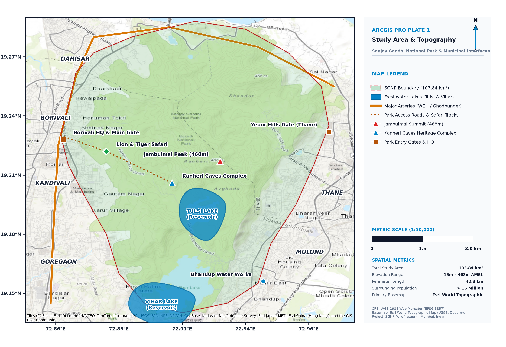

📂 Table of Contents
Reset
▼ Analytical Overlays
WSI Susceptibility Heatmap
30m
500m WUI Exposure Buffer
Buffer
High-Risk Ignition Hotspots
Points
▼ Base Vector Features
SGNP Boundary (103.84 km²)
Freshwater Lakes (Tulsi/Vihar)
Landmarks & Heritage Sites
▼ Response & Evacuation
Fire Stations & Watchtowers
Evacuation Routes & Isochrones
📊 Attribute Table — SGNP Zonation
| FID | Class | Area(km²) | Risk Level |
|---|---|---|---|
| 1 | Very High | 9.9 | 0.85 – 1.00 |
| 2 | High | 20.5 | 0.70 – 0.84 |
| 3 | Moderate | 29.2 | 0.50 – 0.69 |
| 4 | Low | 25.4 | 0.25 – 0.49 |
| 5 | Very Low | 18.9 | 0.00 – 0.24 |
19.2200°N 72.9120°E | Elev: 210m
ArcGIS Pro 300 DPI Published Plate — Map 1

📍 CRS: WGS 1984 Web Mercator (EPSG:3857)
📐 SGNP Extent: 72.852°E–72.978°E, 19.138°N–19.290°N
🛰 Basemap: Esri World Imagery (High-Res)
⏱ Status: Interactive & Ready
📈 Spatial Analysis Engine
Multi-Criteria Evaluation & Risk Zonation
🗺 Zonation Legend
Very High Susceptibility9.5%
High Susceptibility19.7%
Moderate Susceptibility28.1%
Low Susceptibility24.5%
Very Low (Lake Catchments)18.2%
📊 Quantitative Indicators
Total Park Area103.84 km²
Critical WSI Area30.40 km²
Urban WUI Perimeter42.8 km
Vulnerable Padas7 Tribal Clusters
Watchtower Sightline88.4% Coverage
Max Response Time28 minutes
⚖ Multi-Criteria AHP Weights
Slope & Aspect35%
NDVI / Fuel Dryness30%
WUI Settlements Prox.25%
Road & Trail Ingress10%
📋 Geoprocessing Execution Log
✓ Connected to ArcGIS Pro Geodatabase
✓ Loaded Esri World Imagery (30m & sub-meter)
✓ SRTM 30m DEM slope calculated (Yeoor ridge 42°)
✓ MODIS/Landsat NDVI fuel dry fraction classified
✓ Euclidean Distance to WUI boundaries generated
✓ Multi-Criteria AHP Raster Overlay executed
✓ 5-Class WSI Zonation complete
ℹ All layers synchronized with Live Map & Layouts
⚙ ModelBuilder Workflow
⚖Weighted Overlay (WSI)Done
📏Buffer Analysis (500m WUI)Done
🚨Service Area / Network IsochronesDone